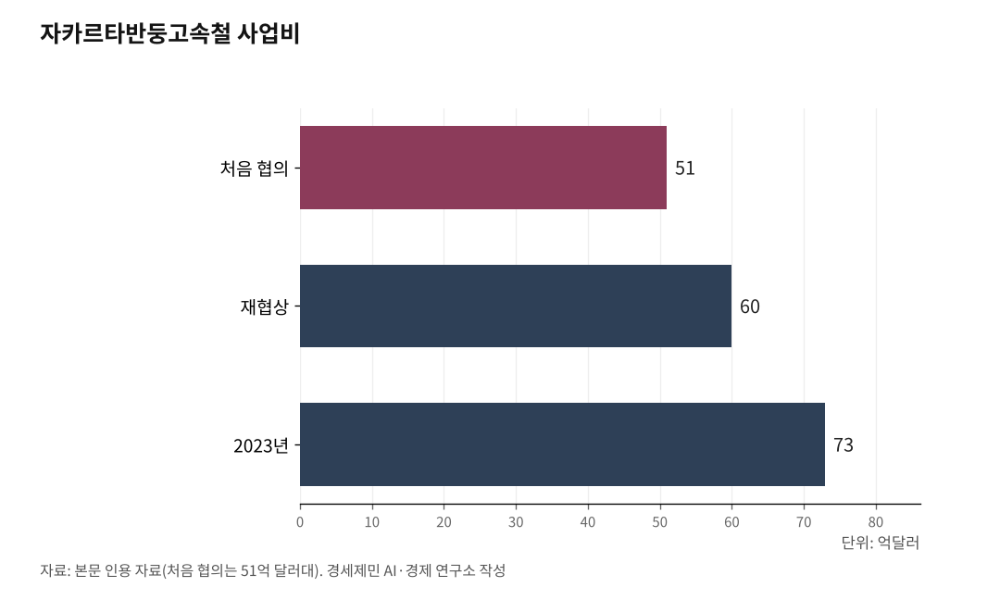

[중국철도⑩] 중국 고속철, 바다 건너 인도네시아를 46분에 꿰뚫다
자카르타반둥고속철 2년, 누적 승객 1200만… 3시간 길이 46분으로
그런데 흑자는 멀다: 합작사 부채 73억 달러에 상환기간 60년
태국은 절반쯤 놓았다… 쿤밍에서 싱가포르로 내려가는 남부 축
인하대 해양AI융합센터 김갑봉 연구교수(물류학)│중국 고속철이 국경을 넘었다. 인도네시아 자카르타와 반둥을 잇는 자카르타반둥고속철(雅万高铁)이 2025년 10월17일로 개통 2년을 맞았다. 누적 승객 1200만 명을 넘겼고, 3시간 넘게 걸리던 길이 46분으로 줄었다. 동남아 첫 고속철이다. 설계도, 시공도, 차량도, 돈도 중국이 댔다. 성과는 뚜렷하다. 그런데 돈 문제는 아직 풀리지 않았다.

1. 바다 건너간 고속철
자카르타반둥고속철은 인도네시아를 넘어 동남아 첫 고속철이다. 2023년 10월17일 개통했다. 총연장 142.3km, 최고 운영속도 시속 350km다. 인도네시아 전 수도 자카르타와 서자바주 주도 반둥을 잇는다. 노선에는 자카르타 할림역과 반둥 텍갈루아르역을 포함해 역 네 곳이 선다.
현지에서는 '우슈(Whoosh)'라 부른다. 빠름을 나타내는 인도네시아식 표현에서 왔다. 달리는 차량은 중국 고속열차 푸싱호(復興號)를 인도네시아에 맞춰 손본 것이다. 열대 기후와 지진에 견디게 설계했다.
개통 2년 만에 누적 승객이 1200만 명을 넘었고, 하루 최고 2만6700명을 실어 날랐다(2025년 10월). 열차는 하루 14편에서 62편으로 늘었고, 정시율은 95%를 웃돈다. 개통 이래 누적 3만6747편이 달렸고, 동차조 열차는 565만km를 무사고로 달렸다. 이미 인도네시아에서 가장 붐비는 철도 간선이 됐다.

2. 46분의 값
값은 시간에서 나온다. 자카르타에서 반둥까지 도로로 3시간 넘게 걸리던 길이 46분으로 줄었다. 통행시간 단축은 교통경제학에서 편익의 핵심이다. 시간이 줄면 사람이 오간다. 반둥이 자카르타의 하루 생활권으로 묶이면서 통근과 출장 수요가 새로 생겼다.
카라왕역이 2024년 12월 열리자 주변 공단이 자카르타 항만·공항과 가까워졌고, 반둥 쪽 역세권에는 관광·요식·소매 상권이 섰다. 역 주변에 새로 자리 잡은 중소·영세 상인만 수백 곳이다. 중국은 이를 고속철에 관광과 도시개발을 엮은 고속철 경제회랑이라 부른다. 개통 뒤 이 노선을 탄 외국인 관광객만 50만 명을 넘는다.
인도네시아대학 연구를 보면 이 고속철의 승객 1인당 1km 이산화탄소 배출은 6.9g으로, 자동차보다 훨씬 낮다. 빠른 길이 도시를 잇자 사람과 돈이 함께 움직였다. 주말마다 반둥으로 떠나는 자카르타 시민이 부쩍 늘었다.
운영진은 인도네시아 승객 습성에 맞춰 유연 요금제를 두고, 온라인 매표 비율을 85% 넘게 끌어올렸다. 역마다 식당과 편의점을 두고, 열차 안에서는 커피와 간식을 판다.
3. 흑자는 멀다
밝은 성과 뒤에는 빚이 있다. 이 노선을 운영하는 합작사는 중국과 인도네시아가 함께 세운 KCIC다. 합작사가 진 부채가 약 73억 달러에 이른다.
빚이 이렇게 커진 데는 까닭이 있다. 처음 협의한 사업비는 51억 달러대였는데, 재협상을 거쳐 60억 달러가 됐다가 2023년 73억 달러까지 불었다. 개통도 밀렸다. 2016년 착공해 2019년 5월 열기로 했으나, 코로나와 용지 분쟁, 비용 초과가 겹쳐 4년 늦은 2023년 10월에야 달렸다.
약속도 어긋났다. 중국은 이 사업을 정부 보증 없이 공공재정도 쓰지 않는 순수 상업사업이라 내세웠다. 그러나 결국 정부 보증과 국가 예산이 들어갔고, 인도네시아 안에서는 이를 두고 기만이라는 비판이 나왔다.
2025년 인도네시아 정부는 중국에 부채 재조정을 요청했다. 중국은 상환기간을 60년으로 늘리는 데 합의했고, 달러 차관을 위안으로 바꾸는 방안과 금리 조정도 논의됐다. 상환기간을 60년으로 늘린다는 것은 부담을 다음 세대까지 나눠 진다는 뜻이다.
인도네시아 국부펀드 다난타라는 국철 KAI의 재무를 지키려고 직접 나서, 2026년 중반까지 재조정을 매듭짓겠다고 했다. 인도네시아는 국가 예산까지 끌어와 이 빚을 갚기로 했다. 재정 형편이 빠듯한 나라에는 무거운 짐이다.
수입이 모자란 데는 배후가 약한 탓도 있다. 종점이 반둥 도심에서 떨어져 연계 교통이 부족하다. 인도네시아 당국도 규획과 배후 연계 부족을 재정난의 한 원인으로 꼽았다. 한 인도네시아 관리는 이 사업을 재정 시한폭탄이라 불렀다(2025년 8월). 승객은 늘어도 흑자까지는 갈 길이 멀다.
4. 쿤밍에서 싱가포르까지
자카르타반둥은 끝이 아니라 시작이다. 중국은 동남아를 남북으로 꿰는 고속철 벨트를 그린다. 범아시아철도(泛亚铁路)는 쿤밍에서 동·중·서 세 갈래로 내려간다. 동선은 베트남, 가운데 선은 라오스, 서선은 미얀마를 지난다. 중라오·중태 노선이 그 가운데 축이다.
태국이 다음이다. 중태철도(中泰铁路) 1기는 방콕에서 나콘라차시마(코랏)까지 253km, 시속 250km로 놓인다. 1기 공정은 2026년 초 절반을 넘어섰고, 2030년 개통을 목표로 삼는다. 2기 코랏~농카이 357km는 2025년 2월 태국 내각을 통과했다. 종점 농카이는 메콩강 건너 라오스 비엔티안과 마주 본다.
다만 1기는 착공 뒤 용지와 설계 문제로 공정이 더뎠고, 중국과 태국은 새 협력 방식으로 속도를 내려 한다. 라오스는 이미 이어졌다. 쿤밍과 비엔티안을 잇는 중라오철도(中老铁路)가 2021년 말 열렸고, 개통 뒤 여객과 국경 관광이 함께 늘었다.
이들을 다 이으면 쿤밍에서 싱가포르로 내려가는 남부 축이 완성된다. 중국 국내 8종8횡 고속철망이 국경 밖 동남아까지 뻗는 그림이다. 태국 농산물과 동남아 공산품이 철길로 중국 내륙 시장에 더 빨리 닿고, 중국 여행객은 열차로 동남아를 오간다.
5. 수출 모델의 명암
중국식 고속철 수출은 한 묶음이다. 설계와 시공, 차량과 신호, 금융과 인력 양성을 함께 판다. 자카르타반둥에서 인도네시아 현지 인력 600명이 중국식 운영 자격을 땄다. 기술이 함께 넘어간 셈이다.
반대편도 있다. 사업비가 불어나고 수요가 예상을 밑돌면, 그 부담은 도입국 재정으로 돌아간다. 자카르타반둥이 그 두 얼굴을 다 보여준다. 고속철 수출은 노선 하나를 파는 일이 아니다. 수십 년을 함께 가는 금융과 운영 계약을 파는 일이다.
중국 고속철은 유럽에도 발을 들였다. 헝가리와 세르비아를 잇는 철도의 세르비아 구간이 이미 열렸다. 중국은 노선을 팔며 자국 기술 표준도 함께 내보낸다. 궤도와 신호, 차량 규격이 중국식으로 깔리면 유지·보수와 부품도 오래 중국에 기댄다.
그래서 학계에서는 도입국의 부채 지속가능성을 두고 논쟁이 이어진다. 중국식만 있는 것도 아니다. 일본은 인도 뭄바이~아메다바드 고속철을 신칸센 기술과 저리 엔화 차관으로 짓는다. 두 방식이 아시아 곳곳에서 맞붙는다. 태국과 그다음 나라들이 같은 길에서 무엇을 얻고 무엇을 짊어질지는 앞으로 드러난다.
※ 이 기사는 AI 프로그램 클로드를 활용해 작성했습니다.
참고문헌
· "雅万高铁开通运营两周年 累计发送旅客超1200万人次(자카르타반둥고속철 개통 2주년, 누적 승객 1200만 초과)", 인민망(人民网), 2025.10.17., https://world.people.com.cn/n1/2025/1017/c1002-40584273.html
· "Indonesia to Use State Budget to Repay Whoosh High-Speed Rail Debt(인니, 국가 예산으로 우슈 고속철 부채 상환)", 자카르타글로브(Jakarta Globe), 2025., https://jakartaglobe.id/business/indonesia-to-use-state-budget-to-repay-7-billion-whoosh-highspeed-rail-debt
· "Indonesia seeks to rework China-funded high-speed rail's debt(인니, 중국 자금 고속철 부채 재조정 추진)", 사우스차이나모닝포스트(SCMP), 2025., https://www.scmp.com/week-asia/economics/article/3326534/indonesia-seeks-rework-china-funded-high-speed-rails-debt
· "Indonesia High-speed Rail Project a Financial 'Time Bomb,' Official Says(인니 고속철, 재정 시한폭탄)", 더디플로맷(The Diplomat), 2025.8., https://thediplomat.com/2025/08/indonesia-high-speed-rail-project-a-financial-time-bomb-official-says/
· "中泰高铁一期工程过半 计划2030年建成通车(중태고속철 1기 절반 넘어, 2030년 개통 계획)", 중국신문망(中新网), 2026.2.15., https://www.chinanews.com.cn/gj/2026/02-15/10573158.shtml
· "雅万高铁造价降至51亿美元(자카르타반둥고속철 사업비·재원 논의)", 界面新闻(제몐신문), https://www.jiemian.com/article/578532.html
※ 이 기사는 인공지능을 활용해 작성했습니다.
관련기사
- [중국철도⑨] 중유반열의 성적표, 대외무역 성장과 구조적 한계
- [중국철도⑧] 중국 고속철도의 두 얼굴, 성장 엔진과 재정 위기
- [중국철도⑦] 제5차 국가철도망이 한국 대륙철도의 분수령
- [중국철도⑥] 한국이 들어선 국제 철도 통로는 다섯 가운데 둘
저작권자 © AI경세제민 무단전재 및 재배포, AI학습 및 활용 금지